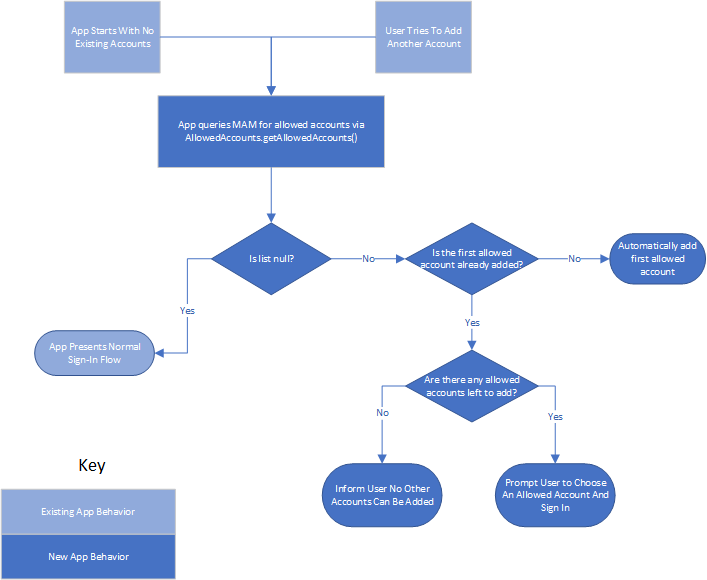
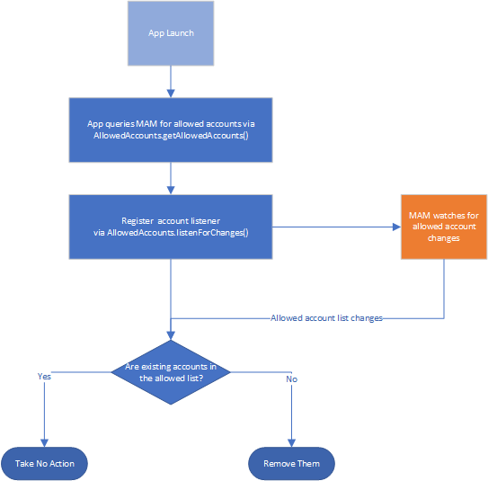
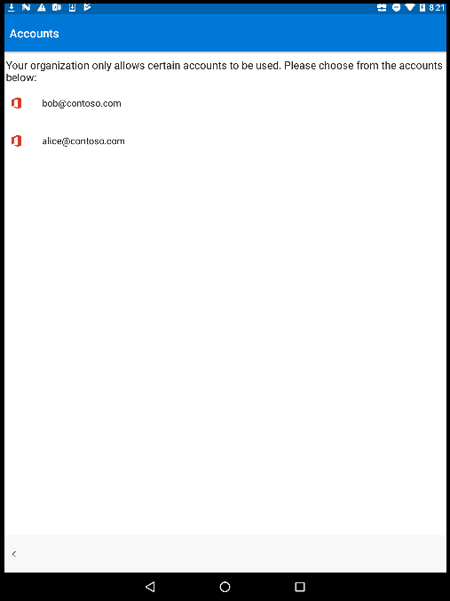
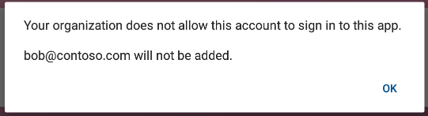
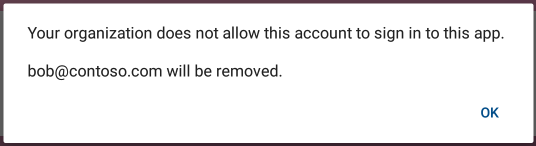

Intune Allowed Accounts for Android developer guide
This document describes how to integrate the Allowed Accounts feature into your app. This feature enables a better protected work experience by restricting the addition of personal accounts within your app when running within a Org (Android Enterprise Work Profile or Device Owner) or APP/MAM-WE managed environments.
Note: Per-Tenant onboarding is required for APP/MAM-WE environment support.
The work to enable this feature must be performed in largest part by your app. The Intune APP/MAM SDK provides only facilities for retrieving the list of allowed accounts and for registering for notification on changes to this list. Because sign-in and account management function differently in each app, it is the app's responsibility to enforce the account restrictions presented by the SDK.
App Behavior Requirements
To integrate this feature, the app must enforce the following functional behaviors:
- Upon startup, the app (e.g. Outlook, Word, etc) will query the APP
SDK to determine if account restrictions are in place. If
AllowedAccounts.getAllowedAccountsreturns null, then no restrictions are in place and the app will proceed as normal. Otherwise, the app will restrict the user to signing in with AAD-based accounts corresponding to UPNs listed byAllowedAccounts.getAllowedAccounts() - If exactly one account is allowed, the app must sign that account in automatically, or with as little user-interaction as possible. If more than one account is allowed, the app should sign-in the first one automatically.
- If the user attempts to add another account and allowed accounts exist which are not yet added, it is expected that the app will present the user with a list of accounts to choose from, rather than simply blocking the sign-in of an unapproved account and forcing the user to guess at what account might be allowed.
- The app will register a listener with the SDK to be informed of
changes to the list of allowed accounts. It can do so using the
method
AllowedAccounts.listenForChanges - The app will immediately remove any accounts which are not in the allowed list.
The following diagrams illustrate these flows
Add Account Flow

Removing Non-Compliant Accounts

Multiple Accounts
If the user is requesting to add an account and there are multiple allowed accounts, your app may present a screen such as the following. 
Technical Integration
AllowedAccounts class
As mentioned above, information about allowed accounts can be
retrieved from the AllowedAccounts class which is part of the APP
SDK.
public final class AllowedAccounts {
/**
* Returns the list of allowed accounts or null if restrictions are not in place.
* If the list is non-null, the app is expected to allow only AAD-based accounts
* corresponding to the listed UPNs to sign in.
*
* @return list of allowed accounts or null if no restrictions
*/
public static List<AllowedAccountInfo> getAllowedAccounts()
/**
* Check if the given UPN or AAD user id (both case-insensitive) is allowed to sign in.
*
* @param upnOrAADId
* UPN or AAD id to check
*
* @return true if the given user is allowed to sign in, false otherwise
*/
public static boolean isAccountAllowed(final String upnOrAADId)
/**
* Listen for changed to the allowed account list. The provided listener will be invoked
* if and when changes occur.
*
* @param listener
* listener to receive change notifications
*/
public static void listenForChanges(AllowedAccountsListener listener)
}
public interface AllowedAccountInfo {
/**
* @return The UPN of the user. Will always be non-null.
*/
String getUPN();
/**
* @return The AAD object id of the user (a GUID). This may be null if unknown.
*/
String getAADUserId();
}
public interface AllowedAccountsListener {
void onAllowedAccountsChanged();
}
Information about an allowed account always contains the UPN. In most
cases the AAD user id uniquely identifying the user will also be
available, but the app must not rely on its existence. If present, the
app may use it to identify the same account across a UPN change. For
example, when your app checks each account which is already signed-in
to ensure that it is allowed, it may make a call like
isAccountAllowed(account.upn). If this returns false, it can make
the secondary check isAccountAllowed(account.aadUserID), assuming
the AAD user ID is known. If this returns true, then the account
should be retained (the user is in fact the same, but the UPN has
changed).
getAllowedAccounts: Returns null if no restrictions are in place. Otherwise returns the list of UPNs for accounts which are allowed to sign in.
Examples
At startup, your app is expected to run code similar to the following
AllowedAccounts.listenForChanges(new AllowedAccountsListener() {
@Override
public void onAllowedAccountsChanged() {
enforceRestrictions();
}
});
if (AllowedAccounts.getAllowedAccounts() != null) {
enforceRestrictions();
if (/*no accounts signed-in*/) {
//start sign-in for AllowedAccounts.getAllowedAccounts().get(0)
}
}
where the enforceRestrictions method may be implemented similar to
void enforceRestrictions() {
if (AllowedAccounts.getAllowedAccounts() == null)
return; // no limitations
List<String> allowedAccounts = AllowedAccounts.getAllowedAccounts();
for(/*each account in your app*/) {
if (!AllowedAccounts.isAccountAllowed(acct.getUPN()) &&
!AllowedAccounts.isAccountAllowed(acct.getAADUserId())) {
//remove the account
}
}
}
Resource Changes
The app must make a resource and manifest change to declare that it supports Allowed Accounts as an Android Enterprise (previously Android for Work or AfW) app config item.
If the app did not previously support any Android Enterprise config items, you must take the following steps. Android Enterprise APIs refer to config items as "restrictions".
- Create an xml resource file for restrictions (e.g.
res/xml/app_restrictions_config.xml) The skeleton of this XML file should be
<restrictions xmlns:android="http://schemas.android.com/apk/res/android"> <!-- <restriction> elements go here --> </restrictions>Create a meta-data item in the manifest to point to this config file
<meta-data android:name="android.content.APP_RESTRICTIONS" android:resource="@xml/app_restrictions_config"/>
For all apps, a new restriction element must be added to the restrictions xml.
<restriction
android:defaultValue=""
android:description="@string/intune_allowed_accounts_description"
android:key="com.microsoft.intune.mam.AllowedAccountUPNs"
android:restrictionType="string"
android:title="@string/intune_allowed_accounts_title"/>
UI Guidelines
For consistency in messaging, the SDK provides the following string resources which your app can use when presenting messages to the user. These are not displayed automatically, they are for your app's use.
@string/intune_allowed_account_explanationExplains that only certain accounts are allowed to sign in.@string/intune_allowed_account_disallowed_fmtShould be displayed if the user has tried to sign in with an account which is not allowed. Requires a single format parameter: a string naming the account being disallowed.@string/intune_allowed_account_removed_fmtShould be displayed if an existing account is being removed due to not being included in the allowed list. Requires a single format parameter: a string naming the account(s) being removed.@string/intune_allowed_accounts_explanation_all_addedShould be displayed if the user wants to add another account and all allowed accounts have already been added.
Blocking Account Sign-In
When blocking sign-in of a new account, it is recommended to display a dialog using the text returned by getResources().getString(R.string.intune_allowed_account_disallowed_fmt, upn). The dialog should present a single OK button.

Removing Existing Accounts
When removing existing accounts because they are not allowed, it is recommended to display a notification or dialog using the text returned by getResources().getString(R.string.intune_allowed_account_removed_fmt, upn)

Testing
It will be necessary to test the allowed account logic which your app implements.
Android Enterprise app config delivery can be performed independently of Intune by using the Google-provided TestDPC app. See https://developer.android.com/work/guide.html#testing for more details. Using the TestDPC app you can configure a value for the restricted accounts configuration item added to your app above. To access this setting, navigate to the "Manage app restrictions" page in TestDPC.
To test a single allowed account, use a single UPN and it's AAD user
ID separated by a colon, such as
bob@contoso.com:ee22a88f-dc89-4be0-92bc-1168254b58cb. It is also
permissable to use simply the UPN, bob@contoso.com. In this latter
case, the AAD user ID will not be available in the
AllowedAccountInfo struct.
To test multiple allowed accounts, account info should be
semicolon-delimited,
e.g. alice@contoso.com:69f7808f-d31b-433a-a541-5522e259c6b4;bob@contoso.com:ee22a88f-dc89-4be0-92bc-1168254b58cb
or alice@contoso.com;bob@contoso.com.
Deployment
Once your app exposes the xml restriction element and when running under a Work Profile, the Intune service will automatically restrict to the organization account owning that Work Profile (or owning the device in Android Enterprise Device Owner scenarios). No admin action is necessary. If a Work Profile is managed by a third-party EMM instead of Intune, that EMM may or may not send the setting or allow admin configuration of it.